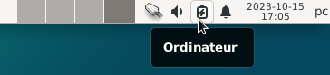
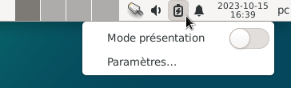
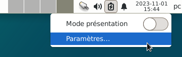
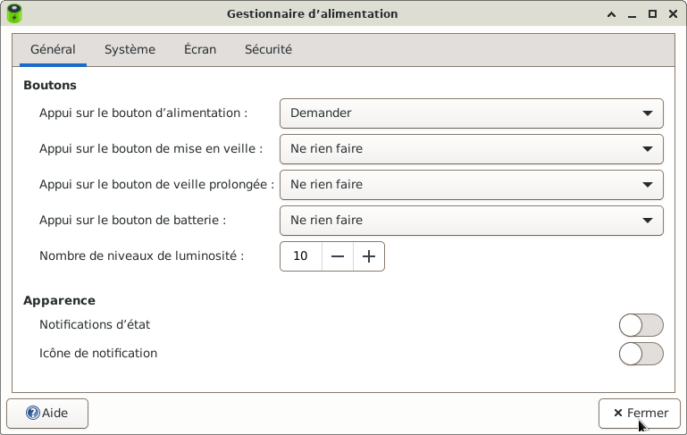
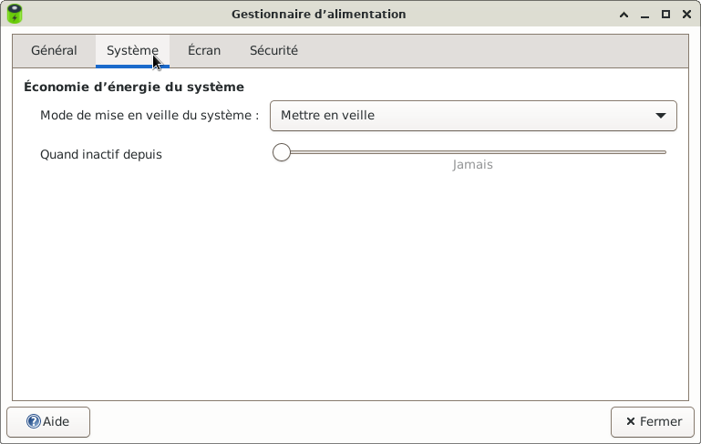
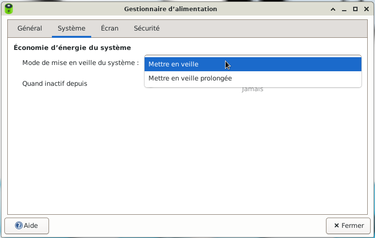
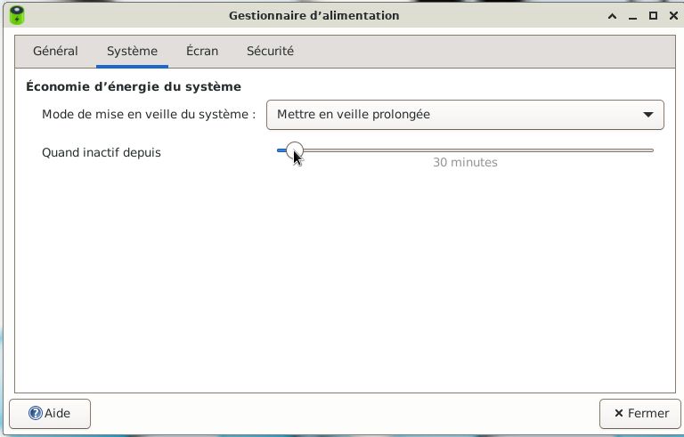
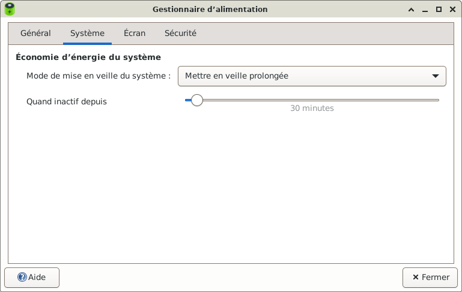

&
Le gestionnaire d'alimentation du PC : Le site Xfce.
Xfce4 Power Manager gère les sources d'alimentation de l'ordinateur et des appareils connectés
(souris sans fil, claviers, lecteurs multimédias, etc.). Il permet également aux utilisateurs de contrôler
la luminosité du rétroéclairage de l'écran et de définir des modes d'économie d'énergie pour les écrans
et les moniteurs.








Nota : Une autre façon pour ouvrir le gestionnaire d'alimentation de l'ordinateur :
Simple clic >Application > Paramètres > Gestionnaire d'alimentation

Informations sur le logiciel libre et Merci.
Marques déposées :
Ce site ne fait pas partie de Debian, n'est pas produit par le projet
Debian, ni approuvé par le projet Debian.
Ce site n'est pas affilié à Debian. Debian est une marque déposée appartenant
à Software in the Public Interest, Inc.
Contribuer :
Ce site ne fait pas partie de XFCE, n'est pas produit par le projet
XFCE, ni approuvé par le projet XFCE.
Ce site n'est pas affilié à XFCE.
Ce site est juste réalisé par un passionné.